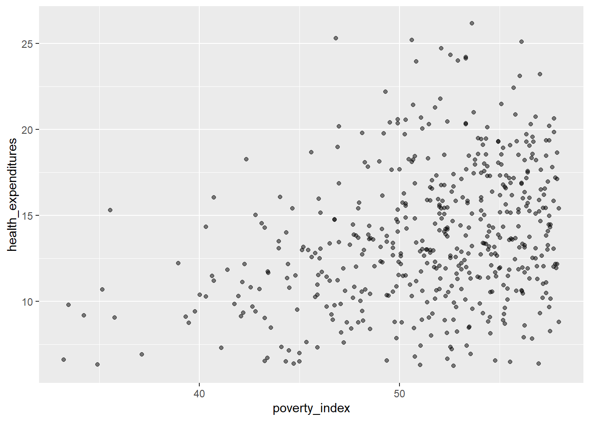
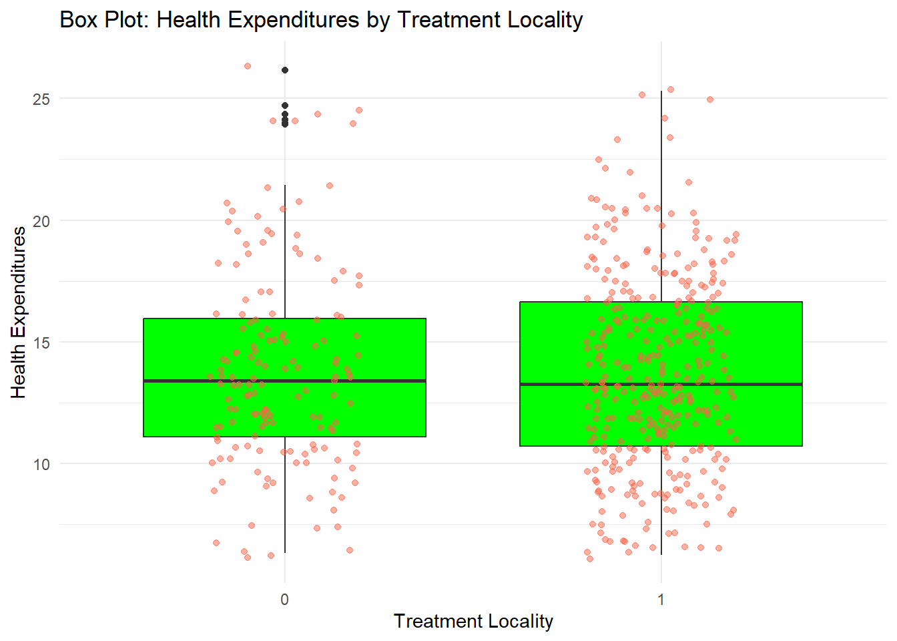
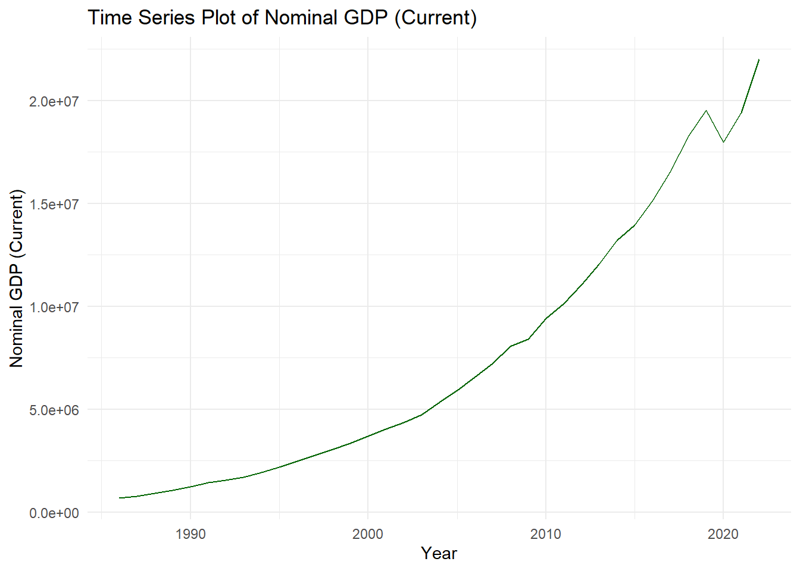
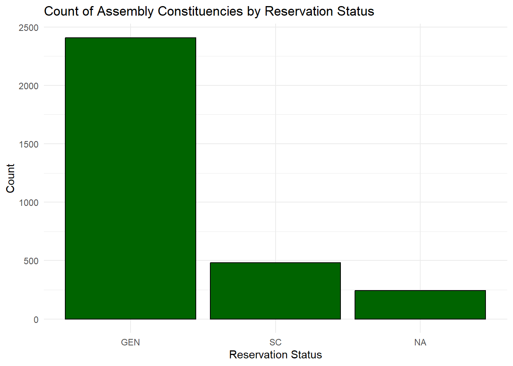
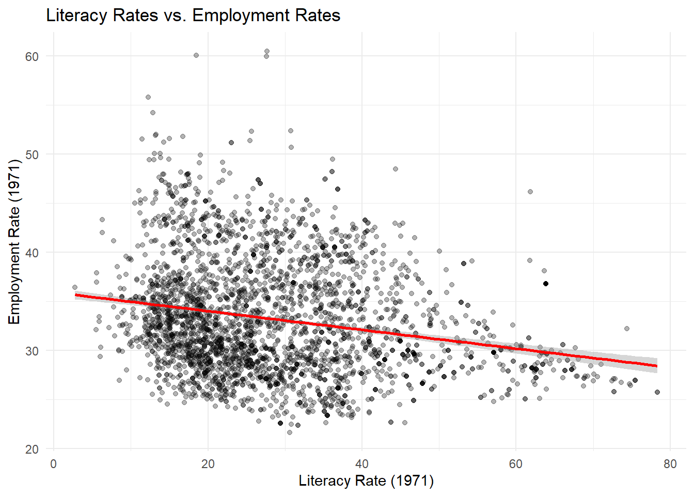
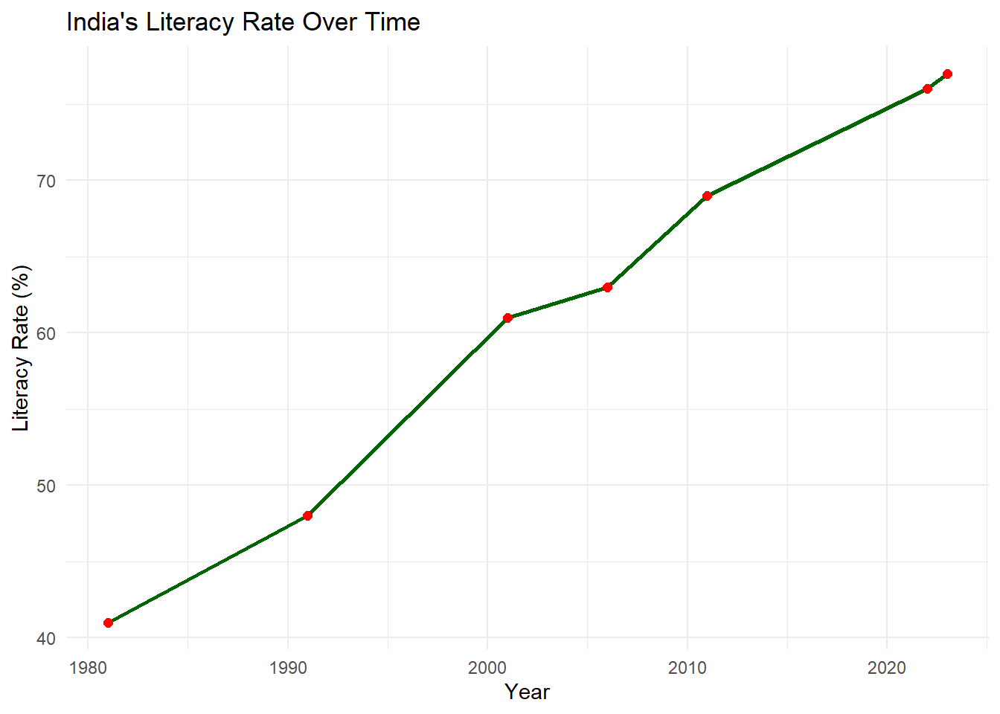
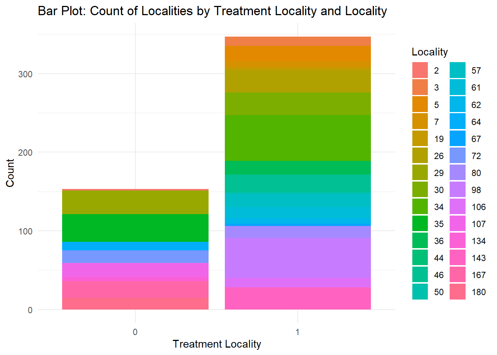
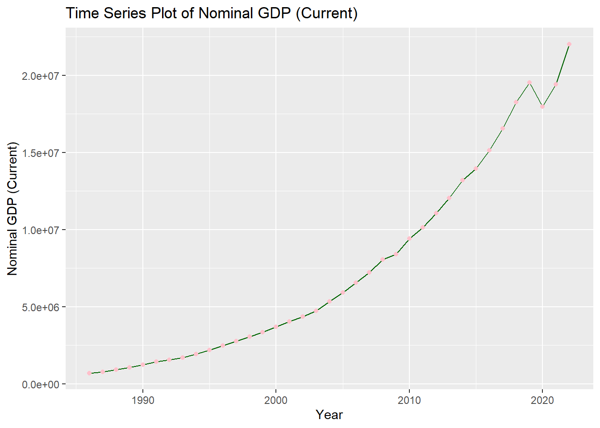

8 Visualizations using ggplot2
For this lecture, we will be using ggplot2 package. Please make sure that you have it installed. The package works best with data in the ‘long’ format so it helps to modify the dataset to this format rather than a wide format.
8.1 Preliminaries
8.1.1 Load the dataset
The dataset can be downloaded from the Modules. We will use Ch4PracticeA for this portion of the discussion.
Unlike previous datasets that we loaded, we are now loading an Excel file. We will need the readxl package for this. Also, it is important to check if there are additional sheets and which sheet you will need. There are actually two sheets in the Excel file, but we will only use the first sheet named base.
## used (Mb) gc trigger (Mb) max used (Mb)
## Ncells 4340470 231.9 7438000 397.3 7438000 397.3
## Vcells 10089297 77.0 77211245 589.1 235630017 1797.8I will not delve deeply in the description. Please read up on it. The description can be found in the last sheet of the Excel file. Next, we load the following package: tidyverse and ggplot2.
8.2 Pre-plotting Check
In some cases, ggplot2 does not run. This can be brought by package mismatch, so, we need to double-check that everything is working properly.
user <- file.path(Sys.getenv("USERPROFILE"), "R", "win-library", "4.5")
dir.create(user, recursive = TRUE, showWarnings = FALSE)
.libPaths(c(user, .libPaths()))
ok <- tryCatch({
library(ggplot2)
ggplot(data.frame(x=1:5, y=rnorm(5)), aes(x,y)) + geom_point()
TRUE
}, error = function(e) FALSE)
if (!ok) {
install.packages("rlang", lib = user_lib)
ok <- tryCatch({
library(ggplot2)
ggplot(data.frame(x=1:5, y=rnorm(5)), aes(x,y)) + geom_point()
TRUE
}, error = function(e) FALSE)
}
if (!ok) plot(1:5, rnorm(5))If it is still not working, please refer to Visualization using Base R
8.2.1 Template
There is a basic template that can be used for different types of plots:
ggplot is a function that expects a data frame to be the first argument. This allows for us to change from specifying the data = argument within the ggplot function and instead pipe the data into the function.
Use the ggplot() function…
Now, we define the mapping (using the aesthetic (aes) function), by selecting the variables to be plotted and specifying how to present them in the graph, e.g. as x/y positions or characteristics such as size, shape, color, etc.
The next step is to add geom which will make the graphical representations of the data. These include:
geom_point()for scatter plots, dot plots, etc.geom_boxplot()for boxplotsgeom_line()for trend lines, time series, etc.geom_bar()for bar plots and pie charts
8.3 Visualizing Data using geom
8.3.1 Scatterplots
Let us use the geom_point() first then we will do the others after. Also, scatterplots are useful when you want to display the relationship between two continuous variables. Can you give me an example of when to use scatterplots?
This visualization is so unclear; this is due to the number of observations being more than 9,000. Let’s just use the first 500 rows as this is for our practice and for visualization purposes.
This is more manageable; let’s try the scatterplot again, this time using the fch4_p1 dataset.

This is more visible; There are some points that overlap with each other. Let us incorporate some strategies to try and ensure that there will be no overplotting issues.
The first strategy is changing the transparency of the points. To control the transparency of points, we add the alpha argument. The range of transparency is from 0 to 1, with lower values corresponding to more transparency. The default value is 1. Let’s try to change the alpha to 0.5.
Some of the points are gray while the others are much darker, then we can see (slightly) the difference.
Another method that we can do is jittering the points on the plot to see the locations where there are overplotting points. Jittering adds randomness into the position of the points. To do this, we add geom_jitter() rather than geom_point(). Also, we need to edit the width and height. You can experiment but if you want less spread, pick values between 0.1 and 0.4.
fch4_p1 %>%
ggplot(aes(x=poverty_index,
y=health_expenditures)) +
geom_jitter(alpha = 0.5,
width= 0.3,
height= 0.3)Let us add color to geom_jitter()
fch4_p1 %>%
ggplot(aes(x=poverty_index,
y=health_expenditures)) +
geom_jitter(alpha = 0.5,
color = "darkgreen",
width= 0.3,
height= 0.3)
If you want to have different colors depending on a certain variable, we need to use a vector as an input in the argument color. Here though, we map features of the data to a certain color. When we map a variable in our data to the color of the points, ggplot2 will provide a different color corresponding to the different values of the variable. We will continue to specify the value of alpha, width, and height outside of the aes function because we are using the same value for every point.
fch4_p1$enrolled<-as.factor(fch4_p1$enrolled)
fch4_p1 %>%
ggplot(aes(x=poverty_index,
y=health_expenditures))+
geom_jitter(aes(color=enrolled),
alpha=0.5,
width=0.3,
height=0.3)We can add a regression line to the plot. The line helps us summarize and predict the relationship between our two variables. To add, it is geom_smooth(method="lm",...) you can edit the design and you can remove the confidence interval (gray area) with placing inside the parenthesis se=FALSE.
fch4_p1$enrolled<-as.factor(fch4_p1$enrolled)
fch4_p1 %>%
ggplot(aes(x=poverty_index,
y=health_expenditures))+
geom_jitter(aes(color=enrolled),
alpha=0.5,
width=0.3,
height=0.3)+
geom_smooth(method = "lm", color = "red", linewidth = 1)## `geom_smooth()` using formula = 'y ~ x'
8.3.2 Boxplots
Here is how to make a box plot that is useful when summarizing the distribution of a continuous variable, highlighting the median, quartiles, and potential outliers.
To interpret a boxplot, take note of the following things:
- Horizontal Line in the Box: this is the median wherein it represents the 50% of the data.
- The Box Itself (Q1 to Q3): The box represents the middle 50% of the data, at the bottom of the box, that is the Q1 (25th percentile) while the top of box is the Q3 (75th percentile). A taller box means more variability is present in the middle of the data
- Whiskers extend from the box to represent the range of the data excluding outliers so it usually end at the smallest and largest data points. It shows the spread of data outside the middle 50%. Longer whiskers point to greater spread in that direction
- Outliers are points outside the whiskers.
8.3.2.1 Skewness
This describes the asymmetry of a data distribution, it can be right-skewed or left-skewed. Boxplots are a great way to visualize skewness.
Right-skewed
The right tail is longer, meaning, median is closer to the bottom and has a longer top whisker.
Most data values are smaller with few large values
- ex. income, price
Left-skewed
The left tail is longer, meaning, median is closer to the top and has a longer bottom whisker.
Most data values are large with few small values
- test scores
*The labs argument is to add labels in the plot.
fch4_p1 %>%
ggplot(aes(x = as.factor(treatment_locality), y = health_expenditures)) +
geom_boxplot(fill = "green") +
labs(title = "Box Plot: Health Expenditures by Treatment Locality",
x = "Treatment Locality",
y = "Health Expenditures") +
theme_minimal()
You can also add some points in the box plot by adding geom_jitter
fch4_p1 %>%
ggplot(aes(x = as.factor(treatment_locality), y = health_expenditures)) +
geom_boxplot(fill="green") +
geom_jitter(alpha = 0.5,
color = "tomato",
width = 0.2,
height = 0.2) +
labs(title = "Box Plot: Health Expenditures by Treatment Locality",
x = "Treatment Locality",
y = "Health Expenditures") +
theme_minimal()
8.3.3 Bar plots
Barplots are also useful for visualizing categorical data. By default, geom_bar accepts a variable for x, and plots the number of instances each value of x (in this case, treatment_locality) appears in the dataset.
fch4_p1 %>%
ggplot(aes(x = as.factor(treatment_locality))) +
geom_bar(fill = "lightgreen") +
labs(title = "Bar Plot: Count of Localities by Treatment Locality",
x = "Treatment Locality",
y = "Count") +
theme_minimal()
Let us change the fill to be locality_identifier. Note, we will have a lot of colors here but this is done for visualization purposes and practice.
fch4_p1 %>%
ggplot(aes(x = as.factor(treatment_locality), fill = as.factor(locality_identifier))) +
geom_bar() +
labs(title = "Bar Plot: Count of Localities by Treatment Locality and Locality",
x = "Treatment Locality",
y = "Count",
fill = "Locality") +
theme_minimal()
This creates a stacked bar chart. These are generally more difficult to read than side-by-side bars. We can separate the portions of the stacked bar that correspond to each locality and put them side-by-side by using the position argument for geom_bar() and setting it to “dodge”.
fch4_p1 %>%
ggplot(aes(x = as.factor(treatment_locality), fill = as.factor(locality_identifier))) +
geom_bar(position = "dodge") +
labs(title = "Bar Plot: Count of Localities by Treatment Locality and Locality",
x = "Treatment Locality",
y = "Count",
fill = "Locality") +
theme_minimal()What if you want to visualize a numeric value for each category? geom_bar() only visualizes the number of observations for a categorical x-variable. We use geom_col() which allows us to visualize numeric values. I will create 4 groups for locality_group so that we have better-looking bars.
fch4_p1 <- fch4_p1 %>%
mutate(locality_group = cut(locality_identifier,
breaks = c(20, 40, 60, 80, 100),
labels = c("20-40", "40-60", "60-80", "80-100"),
include.lowest = TRUE))
table(fch4_p1$locality_group)##
## 20-40 40-60 60-80 80-100
## 197 42 66 51fch4_p1 %>%
ggplot(aes(x = as.factor(locality_group), y=health_expenditures, fill = as.factor(locality_group))) +
geom_col(position = "dodge") +
labs(title = "Bar Plot: Count of Localities by Treatment Locality and Locality",
x = "Locality Group",
y = "Health Expenditures",
fill = "Locality") +
theme_minimal()Want to have height arrangement? Since locality_group appears multiple times, we have to calculate for the mean expenditures per locality_group or total expenditures per locality_group using the .fun=mean or .fun=sum then, from largest to smallest height, we say .desc = TRUE. The fct_reorder is used because we have the calculations per group and the bars are reordered based on the calculations.
fch4_p1 %>%
mutate(locality_group = fct_reorder(locality_group, health_expenditures, .fun = sum, .desc = TRUE)) %>%
ggplot(aes(x = locality_group, y = health_expenditures, fill = locality_group)) +
geom_col() +
labs(
title = "Health Expenditures by Locality Group",
x = "Locality Group",
y = "Health Expenditures",
fill = "Locality Group"
) +
theme_minimal() 
8.3.4 Faceting
ggplot2 has a special technique called faceting that allows the user to split one plot into multiple plots based on a factor included in the dataset.
fch4_p1 %>%
ggplot(aes(x = poverty_index, y = health_expenditures)) +
geom_point(alpha = 0.6, color = "darkblue") +
facet_wrap(~ locality_identifier, ncol = 4) +
labs(title = "Faceted Scatter Plot by Locality Identifier",
x = "Poverty Index",
y = "Health Expenditures") +
theme_minimal()
It doesn’t look that nice; let’s use the locality_group we created before.
8.3.5 Pie Chart
Pie charts are used to illustrate proportions or parts of a whole (limited to a small number of categories). Before we do the pie chart, we need to count how many observations there are in the variable we want to analyze.
treatment_counts <- fch4_p1 %>%
count(treatment_locality)
ggplot(treatment_counts, aes(x = "", y = n, fill = as.factor(treatment_locality))) +
geom_bar(stat = "identity", width = 1) +
coord_polar(theta = "y") + #this makes it a pie chart
labs(title = "Pie Chart: Proportion of Treatment Localities",
fill = "Treatment Locality") +
theme_void() #another way to have a nice backgroundIf you want to put labels to each slice and let’s say you want the percentage for it, this is the code:
treatment_counts <- fch4_p1 %>%
count(treatment_locality) %>% #for count
mutate(percentage = n / sum(n) * 100, #calculate percentage
label = paste0(treatment_locality, "\n", round(percentage, 1), "%")) #add label for percentage
ggplot(treatment_counts, aes(x = "", y = n, fill = as.factor(treatment_locality))) +
geom_bar(stat = "identity", width = 1) +
coord_polar(theta = "y") +
geom_text(aes(label = label),
position = position_stack(vjust = 0.5), size = 4) +
labs(title = "Pie Chart: Proportion of Treatment Localities",
fill = "Treatment Locality") +
theme_void()
8.3.6 Histogram
Though it looks similar to a bar plot, a histogram is different since it displays the distribution of a continuous variable. It groups the data into intervals called bins and shows the frequency of data points within each bin.
fch4_p1 %>%
ggplot(aes(x=poverty_index))+
geom_histogram(binwidth = 5, fill="green", color="black")+
theme_minimal()
Here is a cheat sheet for ggplot2 from the ones who developed the package: ggplot2 Cheat Sheet
8.4 Visualizing Time Series Data
When visualizing time series data, it is important to ensure that the time variable is formatted as Date. For this portion of the lecture, we use Ch4PracticeB.xlsx which is found in the Modules. Make sure to clean the environment, load the file and rename the columns since they are quite long. I will not show the codes for this portion anymore as I am sure you already know how.
## used (Mb) gc trigger (Mb) max used (Mb)
## Ncells 4340461 231.9 7438000 397.3 7438000 397.3
## Vcells 10031465 76.6 61768996 471.3 235630017 1797.8## # A tibble: 6 × 12
## year nominal_gdp_current nominal_gdp_constant gdp_growth_current gdp_growth_constant total_debt debt_to_gdp interest_payments
## <chr> <dbl> <dbl> <dbl> <dbl> <dbl> <dbl> <dbl>
## 1 1986 692852 4298952 0.065 0.035 528347 0.783 21612
## 2 1987 777283 4486464 0.122 0.044 566447 0.749 36905
## 3 1988 910280 4786920 0.171 0.067 580682 0.656 45865
## 4 1989 1054529 5082939 0.158 0.062 605106 0.59 54714
## 5 1990 1227882 5239629 0.164 0.031 701129 0.587 71114
## 6 1991 1422958 5216764 0.159 -0.004 768469 0.556 74922
## # ℹ 4 more variables: amortization_payments <dbl>, phil_us_exchange_rate <dbl>, inflation <dbl>, fdi_net <dbl>Ensure the time variable is formatted as
DateI will not show the code for this since this has been done in previous lectures.
Template
To make a time series visualization, this is the template:
ggplot(data, aes(x = time_variable, y = value_variable)) + geom_line(color = "blue") + #adds a trend line labs(title = "Time Series Plot", x = "Time", y = "Value") + theme_minimal()Time Series Plot
You might wonder why mine does not have a warning. Usually, there will be warnings that will come out. To remove it, simply add inside the
{r},warning=FALSElike:{r,warning=FALSE}options(scipen=999) #not scientific notation ch4_p2 %>% ggplot(aes(x=year, y=nominal_gdp_current))+ geom_line(color="darkgreen")+ labs(title = "Time Series Plot of Nominal GDP (Current)", x = "Year", y = "Nominal GDP (Current)") + theme_minimal()
We can add points for clarity and change size of line to be thicker.
options(scipen=999)
ch4_p2 %>%
ggplot(aes(x=year, y=nominal_gdp_current))+
geom_line(color="pink", size=1)+
geom_point(color= "purple")+
labs(title = "Time Series Plot of Nominal GDP (Current)", x = "Year", y = "Nominal GDP (Current)") 
8.5 Closing
Quiz will be done for 15 minutes
Clean the environment BEFORE the quiz.
You will have a different dataset for the quiz.
8.6 Visualizations using Base R
library(readxl)
ch4_p1 <- read_excel("Ch4PracticeA.xlsx", sheet = "base")
fch4_p1 <- head(ch4_p1, 500)8.6.1 Scatterplots
plot(fch4_p1$poverty_index, fch4_p1$health_expenditures, xlab= "Poverty Index", ylab= "Health Expenditures", main="Scatterplot of Poverty Index vs Health Expenditures")
Transparency
In ggplot2, we use alpha but in Base R, we use rgb()
plot(fch4_p1$poverty_index, fch4_p1$health_expenditures,
col = rgb(0,0,0,0.5),
pch=16,
xlab= "Poverty Index", ylab= "Health Expenditures", main="Scatterplot of Poverty Index vs Health Expenditures")
rgb for black is r=0, g=0, b=0 then the last is alpha 50% transparency.
pch = 16 is solid filled circle, if it is 1, it is a hollow circle.
Jitter
plot(jitter(fch4_p1$poverty_index, amount = 0.3),
jitter(fch4_p1$health_expenditures, amount=0.3),
col=rgb(0,0.5,0, 0.5),
pch=16,
xlab= "Poverty Index", ylab= "Health Expenditures", main="Scatterplot of Poverty Index vs Health Expenditures")
The amount is 0.3 which is the width and height equivalent of the jitter using ggplot2. We changed the color to green so g=0.5.
Color by group (aes(color=enrolled))
colors<-as.factor(fch4_p1$enrolled)
plot(jitter(fch4_p1$poverty_index, amount = 0.3),
jitter(fch4_p1$health_expenditures, amount=0.3),
col= colors,
pch=16,
xlab= "Poverty Index", ylab= "Health Expenditures", main="Scatterplot of Poverty Index vs Health Expenditures")
legend("topright",
legend = levels(colors),
col=1:length(levels(colors)),
pch=16,
title = "Enrolled")
We need to convert enrolled into categorical variable so that each value becomes a group. Base R automatically decides on the colors to each factor.
In the legend, we manually tell R to provide it, and we set legend = levels(colors), as factor levels being their legend, col=1:length(levels(colors)) assigns legend colors then pch=16 for matching the plot symbols.
Adding Regression Line
You can add a regression line by adding abline(lm(y~x),...)
colors<-as.factor(fch4_p1$enrolled)
plot(jitter(fch4_p1$poverty_index, amount = 0.3),
jitter(fch4_p1$health_expenditures, amount=0.3),
abline(lm(fch4_p1$health_expenditures ~ fch4_p1$poverty_index), col = "red", lwd=2),
col= colors,
pch=16,
xlab= "Poverty Index", ylab= "Health Expenditures", main="Scatterplot of Poverty Index vs Health Expenditures")
legend("topright",
legend = levels(colors),
col=1:length(levels(colors)),
pch=16,
title = "Enrolled")
8.6.2 Boxplots
If you want to change color, just add col =
Adding jittered points
boxplot(health_expenditures ~ as.factor(treatment_locality), data=fch4_p1,
col="green",
outline=FALSE)
stripchart(health_expenditures ~ as.factor(treatment_locality),
data=fch4_p1,
vertical = TRUE,
method = "jitter",
jitter = 0.2,
pch=16,
col = rgb(1,0.2,0.2,0.5), #similar to tomato color with transparency
add = TRUE)
We need to draw the boxplot before we add the jitter. outline = FALSE prevents double-plotting, stripchart() overlays the individual observations on the boxplot with jittering to avoid overlap, vertical = TRUE aligns points with the boxplots.
8.6.3 Bar Plots
We need to count the values while barplot visualizes the counts
Stacked Bar Plots
In the stacked bar plots, rows are the treatment_locality while columns are locality_identifier

Side-by-Side Bars
barplot(t(counts_matrix),
beside = TRUE, # side-by-side
col = rainbow(ncol(counts_matrix)),
legend.text = TRUE)
Reordering bars/when specified numeric value
Unlike ggplot2, in base R, we need to calculate first.
fch4_p1 <- fch4_p1 %>%
mutate(locality_group = cut(locality_identifier,
breaks = c(20, 40, 60, 80, 100),
labels = c("20-40", "40-60", "60-80", "80-100"),
include.lowest = TRUE))
table(fch4_p1$locality_group)##
## 20-40 40-60 60-80 80-100
## 197 42 66 51agg <- aggregate(health_expenditures ~ locality_group, data = fch4_p1, sum)
agg <- agg[order(agg$health_expenditures, decreasing = TRUE), ]
barplot(
height = agg$health_expenditures,
names.arg = agg$locality_group,
col = rainbow(nrow(agg)),
main = "Health Expenditures by Locality Group",
xlab = "Locality Group",
ylab = "Health Expenditures",
las = 2 # rotate axis labels for readability
)
8.6.4 Faceting
par(mfrow = c(2, 2))
for (g in levels(fch4_p1$locality_group)) {
subset_data <- subset(fch4_p1, locality_group == g)
plot(subset_data$poverty_index,
subset_data$health_expenditures,
main = paste("Locality Group:", g),
xlab = "Poverty Index",
ylab = "Health Expenditures",
pch = 16,
col = rgb(0, 0.5, 0, 0.6))
}
You will notice that unlike ggplot2, Base R skips the missing. To avoid this, you have to create a separate category for missing.
par(mfrow=c(nrows, ncols)) splits the plotting area then we created a function that loops each locality_group to have a different plot. Then, we reset the plotting layout with par(mfrow=c(1,1)) for succeeding plots.
8.6.5 Pie Chart
tcounts <- table(fch4_p1$treatment_locality)
pie(tcounts,
col = rainbow(length(tcounts)),
main = "Pie Chart: Proportion of Treatment Localities") 
Again, table() counts instances per category, while rainbow assigns a color to each category
Adding Percentages per slice
pslice <- round(100 * tcounts / sum(tcounts), 1)
#We create labels that includes the name of slice with the percent of each slice
labels <- paste(names(tcounts), "\n", pslice, "%", sep="")
pie(tcounts,
labels = labels,
col = rainbow(length(tcounts)),
main = "Pie Chart: Proportion of Treatment Localities")
8.6.6 Histogram
hist(fch4_p1$poverty_index,
col = "green",
border = "black",
xlab = "Poverty Index",
main = "Histogram of Poverty Index")R automatically chooses breaks.
8.6.7 Time Series
options(scipen=999)
plot(ch4_p2$year,
ch4_p2$nominal_gdp_current,
type = "l",
col = "darkgreen",
xlab = "Year",
ylab = "Nominal GDP (Current)",
main = "Time Series Plot of Nominal GDP (Current)")To make the line, the type is small letter L, not 1. To add points:
options(scipen=999)
plot(ch4_p2$year,
ch4_p2$nominal_gdp_current,
type = "l",
col = "pink",
lwd = 2,
xlab = "Year",
ylab = "Nominal GDP (Current)",
main = "Time Series Plot of Nominal GDP (Current)")
points(ch4_p2$year,
ch4_p2$nominal_gdp_current,
col = "purple",
pch = 16)